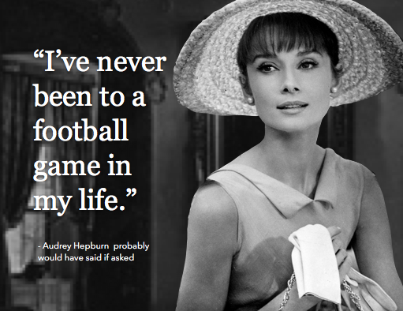

Wed Jan 20
As covered in an earlier post, there is reason to believe our ancestors saw the world much differently than we do, and it might be because they don't have the same color words that we do. Even more exciting, this phenomenon might be going on in present-day.
The Himba tribe in Namibia don't have distinct words for blue and green, but instead have a generalized word for medium-dark colors including blue and some greens. But they also have many others words for green, covering the various shades and tints. (Perhaps plantlife is central to their lives, owing to this keen sense of green and blasé attitude toward blue.)
In 2005, Oxford scientists tested if this difference in language causes the Himba tribe members to see colors differently than English-speakers do. The result is the Himba Color Experment.
For the experiment, Himba volunteers were asked to pick out a blue square among green ones. Sounds easy enough, but they struggled with it and some couldn't do it at all. Then the experiment flipped: they were shown all green squares with one only slightly different from the others. The Himba had no trouble picking out the different green, a task Westerners find difficult.
These findings support the Lingustic Relativity theory, which says that language influences the speaker's world view or cognition. What this means for color-perception within a culture is unclear, but I for one am inspired to learn more names for green.


Tue Jan 19
St. Louis,
Please don't worry about losing your football team to Los Angeles. Many people don't even like football. Now is your chance to meet them. Throw a literary festival! Become a tech hub! Have a graffiti competition!
I know it feels bleak now but you have new friends waiting to meet you, St. Louis. And they will come, not in spite of, but because you are a football-free city.
Sincerely,
A potential visitor to St. Louis
Mon Jan 18
Back in school, if you had to read The Iliad you might have overlooked some odd passages regarding the colors of things: where it says the sky is bronze, the sea is the color of wine, and sheep are violet. Something got lost in translation, right?
Not necessarily. Most ancient texts, including the New Testament, use colors in ways you and I never would. Why is that? It could be that different cultures actually see colors differently, depending on if there is a word for a particular color in that language. If your brain doesn't have a word for, say, blue - like the ancients didn't - it won't detect blue and substitute a color for which it does have a word.
Sounds outlandish but convincing evidence was videoed in the Himba Color Experment. A tribe in Namibia has no word for blue but several for green and the Himba volunteers couldn't pick out a blue swatch among a bunch of green swatches.
It's not conclusive but very tempting. I mean, who wouldn't want to live in a word with violet sheep?